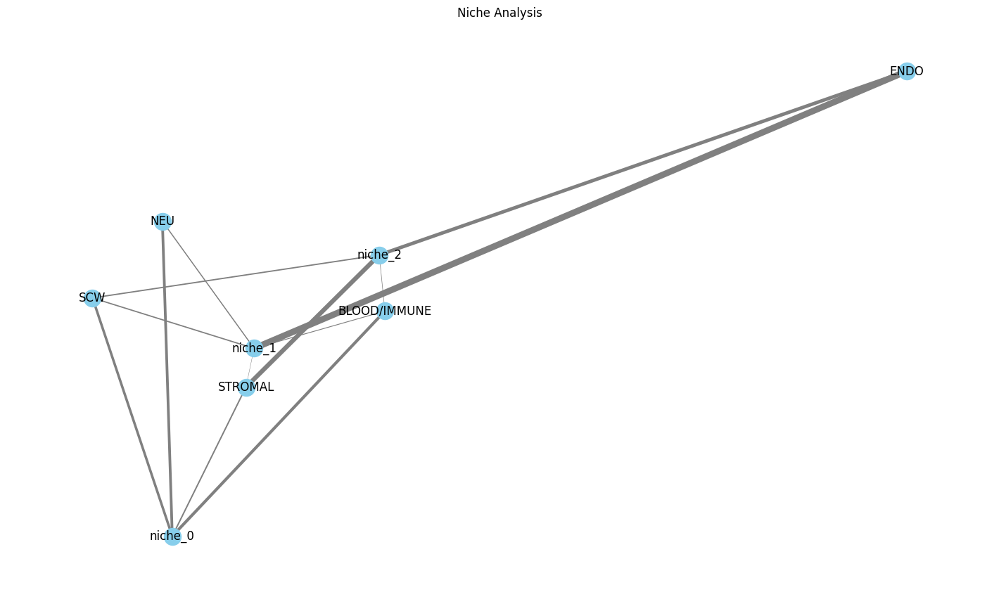
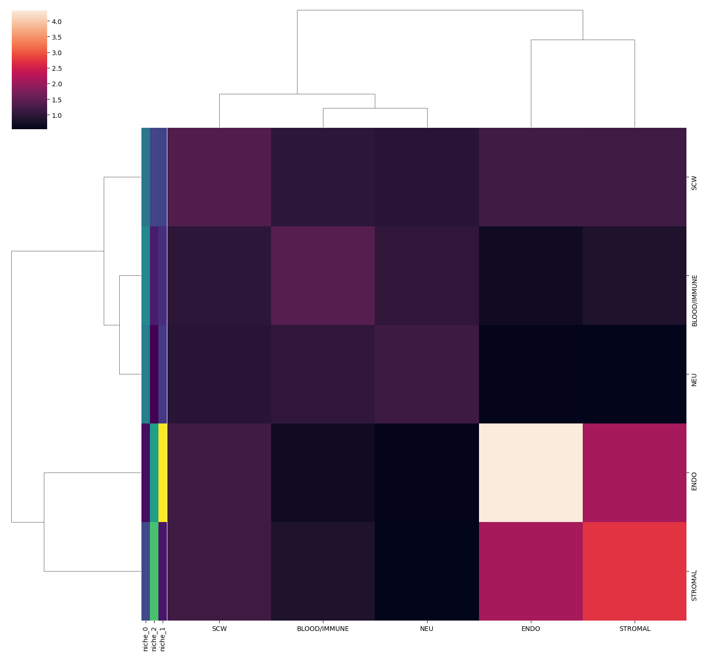

nichefinder - Xenium data
import sys
import logging
import pandas as pd
import scanpy as sc
import matplotlib.pyplot as plt
import seaborn as sns
sys.path.append("..")
import nichefinder as nf
logging.basicConfig(level=logging.INFO)
1. Load data
spatial
iss_ad = sc.read_h5ad("../data/C172ii_xenium_matrix.h5ad")
sc.pp.filter_cells(iss_ad, min_genes=1)
iss_ad
AnnData object with n_obs × n_vars = 152411 × 310
obs: 'cell_id', 'transcript_counts', 'control_probe_counts', 'control_codeword_counts', 'unassigned_codeword_counts', 'deprecated_codeword_counts', 'total_counts', 'cell_area', 'nucleus_area', 'region', 'cell_labels', 'n_genes'
var: 'gene_ids', 'feature_types', 'genome'
uns: 'spatialdata_attrs'
obsm: 'spatial'
sc.pp.normalize_total(iss_ad)
sc.pp.log1p(iss_ad)
iss_ad.X.min(), iss_ad.X.max(), iss_ad.raw
(np.float32(0.0), np.float32(5.081404), None)
sc.pp.neighbors(iss_ad, n_neighbors=5, use_rep='spatial')
/Users/janpatrickpett/miniforge3/envs/nichefinder/lib/python3.11/site-packages/tqdm/auto.py:21: TqdmWarning: IProgress not found. Please update jupyter and ipywidgets. See https://ipywidgets.readthedocs.io/en/stable/user_install.html
from .autonotebook import tqdm as notebook_tqdm
suspension reference
ad = sc.read_h5ad("../data/suspension_subsampled_20Sep24.h5ad")
sc.pp.filter_cells(iss_ad, min_genes=1)
ad
AnnData object with n_obs × n_vars = 10000 × 34170
obs: 'run_batch', 'run_id', 'trisomy', 'scrublet_score', 'scrublet_leiden', 'cluster_scrublet_score', 'doublet_pval', 'doublet_bh_pval', 'batch', 'pcw', 'brc_code', 'anatomical_site', 'relative_position', 'percent_mito', 'percent_ribo', 'n_counts', 'n_genes', 'n_genes_by_counts', 'total_counts', 'total_counts_mt', 'pct_counts_mt', 'total_counts_ribo', 'pct_counts_ribo', 'total_counts_hb', 'pct_counts_hb', 'QC', 'S_score', 'G2M_score', 'phase', 'batch_key', '_scvi_batch', '_scvi_labels', 'leiden_scVI', 'doublet_cls', 'annot_endo', 'annot_stroma', 'annot_schwann', 'annot_immune', 'annot_neuronal', 'annot', 'cell_type_coarse'
var: 'gene_ids-0', 'gene_ids-1', 'gene_ids-10', 'gene_ids-11', 'gene_ids-12', 'gene_ids-13', 'gene_ids-14', 'gene_ids-15', 'gene_ids-16', 'gene_ids-17', 'gene_ids-18', 'gene_ids-19', 'gene_ids-2', 'gene_ids-20', 'gene_ids-21', 'gene_ids-22', 'gene_ids-23', 'gene_ids-3', 'gene_ids-4', 'gene_ids-5', 'gene_ids-6', 'gene_ids-7', 'gene_ids-8', 'gene_ids-9', 'n_cells', 'mt', 'ribo', 'hb', 'n_cells_by_counts', 'mean_counts', 'pct_dropout_by_counts', 'total_counts', 'highly_variable', 'means', 'dispersions', 'dispersions_norm', 'highly_variable_nbatches', 'highly_variable_intersection'
uns: '_scvi_manager_uuid', '_scvi_uuid', 'anatomical_site_colors', 'annot_colors', 'brc_code_colors', 'cell_type_coarse_colors', 'dendrogram_leiden_scVI', 'doublet_cls_colors', 'hvg', 'leiden', 'leiden_scVI_colors', 'log1p', 'neighbors', 'phase_colors', 'rank_genes_groups', 'relative_position_colors', 'run_id_colors', 'trisomy_colors', 'umap'
obsm: 'X_pca', 'X_scVI', 'X_umap', 'X_umap_scVI', '_scvi_extra_categorical_covs', '_scvi_extra_continuous_covs'
obsp: 'connectivities', 'distances'
ad.X.min(), ad.X.max(), ad.raw
(np.float32(0.0), np.float32(8.310645), None)
2. Select highly variable genes (HVGs)
gene_sel = nf.select_genes(
suspension=ad,
spatial=iss_ad,
kind='hvg',
min_disp=0.1,
)
INFO:nichefinder.gene_selection:select 310 overlapping genes
INFO:nichefinder.gene_selection:select highly variable genes for suspension data
INFO:nichefinder.gene_selection: > number of HVG in suspension: 93
INFO:nichefinder.gene_selection:select highly variable genes for spatial data
INFO:nichefinder.gene_selection: > number of HVG in spatial: 111
INFO:nichefinder.gene_selection:number of selected genes: 46
len(gene_sel)
46
3) Transfer labels
iss_ad = nf.transfer_labels(
suspension=ad,
spatial=iss_ad,
genes=gene_sel,
labels='cell_type_coarse',
train_kwargs=dict(use_rep='X'),
predict_kwargs=dict(use_rep='X'),
)
INFO:nichefinder.label_transfer:subsetting to 46 genes
INFO:nichefinder.label_transfer:training logistic regression model for cell_type_coarse
INFO:nichefinder.label_transfer:predicting labels for cell_type_coarse
INFO:nichefinder.label_transfer:46 features used for prediction
INFO:nichefinder.label_transfer:compiling results
INFO:nichefinder.label_transfer:adding predicted labels for cell_type_coarse to spatial dataset
nf.add_prob_to_obs(iss_ad, 'cell_type_coarse')
AnnData object with n_obs × n_vars = 152411 × 310
obs: 'cell_id', 'transcript_counts', 'control_probe_counts', 'control_codeword_counts', 'unassigned_codeword_counts', 'deprecated_codeword_counts', 'total_counts', 'cell_area', 'nucleus_area', 'region', 'cell_labels', 'n_genes', 'annot', 'ASTROCYTE', 'Arach_FIB', 'Art_EC1', 'Art_EC2', 'BBB_EC1', 'BBB_EC2', 'CYCLING_GLIOBLAST', 'CYCLING_PRE_ASTROCYTE', 'CYCLING_RG', 'Cycling_FIB', 'Cycling_SCP', 'DC', 'Dura_FIB1', 'Dura_FIB2', 'Early_ERY', 'Early_MK', 'Eo/Baso', 'GLIOBLAST', 'Immature_B', 'Late_ERY', 'Late_MK', 'MP_LYVE1+', 'MP_LYVE1+_FOLR2+', 'MP_LYVE1+_ICAM1', 'MP_LYVE1+_cycling', 'Mast', 'Mid_ERY', 'Mono', 'Myo_FIB', 'NEUROBLAST_1', 'NEUROBLAST_2', 'NEURON', 'OC', 'PERI1', 'PERI2', 'PRE_ASTROCYTE', 'Pia_FIB1', 'Pia_FIB2', 'Plasma_B', 'Pre_B', 'Pre_OB', 'Pre_Pro_B', 'Pro_B', 'RG', 'SCHWANN', 'SCP', 'Satellite_GLIA', 'T/NK', 'Ven_EC1', 'Ven_EC2', 'YS_ERY', 'cell_type_coarse', 'BLOOD/IMMUNE', 'ENDO', 'NEU', 'SCW', 'STROMAL'
var: 'gene_ids', 'feature_types', 'genome'
uns: 'spatialdata_attrs', 'log1p', 'neighbors', 'label_transfer', 'annot_colors'
obsm: 'spatial', 'annot_prob', 'cell_type_coarse_prob'
obsp: 'distances', 'connectivities'
plot labels
logging.basicConfig(level=logging.INFO)
sc.pl.spatial(iss_ad, color='cell_type_coarse', spot_size=20)
/var/folders/m2/myty8yy51jbgyp19lgf5zsmh0000gn/T/ipykernel_70627/526340235.py:1: FutureWarning: Use `squidpy.pl.spatial_scatter` instead.
sc.pl.spatial(iss_ad, color='cell_type_coarse', spot_size=20)

with plt.rc_context({'axes.facecolor': 'black'}):
sc.pl.spatial(iss_ad, color=['Pia_FIB1', 'Dura_FIB1', 'Arach_FIB'], spot_size=20, vmax="p99")
/var/folders/m2/myty8yy51jbgyp19lgf5zsmh0000gn/T/ipykernel_70627/2980743314.py:2: FutureWarning: Use `squidpy.pl.spatial_scatter` instead.
sc.pl.spatial(iss_ad, color=['Pia_FIB1', 'Dura_FIB1', 'Arach_FIB'], spot_size=20, vmax="p99")

4) Analyse niches
aggregate neighborhoods
agg_prob = nf.aggregate_neighbors(
spatial=iss_ad,
label='cell_type_coarse',
)
sns.clustermap(agg_prob, figsize=(15,15))
<seaborn.matrix.ClusterGrid at 0x34e7d8b10>
find niches
result = nf.find_niches(
agg_prob,
plot=True,
n_clusters=None,
max_clusters=8,
return_dataframes=False,
)
print(f"Selected number of niches: {result.n}")
# symmetrize the factors into a single membership matrix
S = nf.symmetrise_nmf_factors(result.W, result.H)
niche_names = [f"niche_{i}" for i in range(result.n)]
membership = pd.DataFrame(S, index=agg_prob.index, columns=niche_names)
print("Membership matrix (cell-types x niches):")
display(membership)
INFO:nichefinder.niche_analysis:calculate reconstruction errors for 8 clusters
/Users/janpatrickpett/miniforge3/envs/nichefinder/lib/python3.11/site-packages/sklearn/decomposition/_nmf.py:124: RuntimeWarning: invalid value encountered in sqrt
return np.sqrt(res * 2)
/Users/janpatrickpett/miniforge3/envs/nichefinder/lib/python3.11/site-packages/sklearn/decomposition/_nmf.py:124: RuntimeWarning: invalid value encountered in sqrt
return np.sqrt(res * 2)
INFO:nichefinder.niche_analysis:selected optimal number of clusters: 3
INFO:nichefinder.niche_analysis:ploting reconstruction error

Selected number of niches: 3
Membership matrix (cell-types x niches):
| niche_0 | niche_1 | niche_2 | |
|---|---|---|---|
| BLOOD/IMMUNE | 0.302194 | 0.083523 | 0.052061 |
| ENDO | 0.022250 | 0.644211 | 0.357425 |
| NEU | 0.276154 | 0.109662 | 0.000000 |
| SCW | 0.255938 | 0.126854 | 0.133670 |
| STROMAL | 0.143465 | 0.035749 | 0.456844 |
plot niches
niches as graph with cutoff
with plt.rc_context({'figure.figsize': (14, 8)}):
nf.plot_niches(
membership=membership,
threshold=0.03,
scale=None,
edge_width_scale=10.0,
)

niches as heatmap
sns.clustermap(membership.T, figsize=(15,5), cmap='viridis')
<seaborn.matrix.ClusterGrid at 0x363f65c50>
niches next to clustered matrix of aggregated neighbors
nf.plot_aggregated_neighbors(
agg_prob,
membership,
figsize=(15,14),
colors_ratio=.0125,
)
